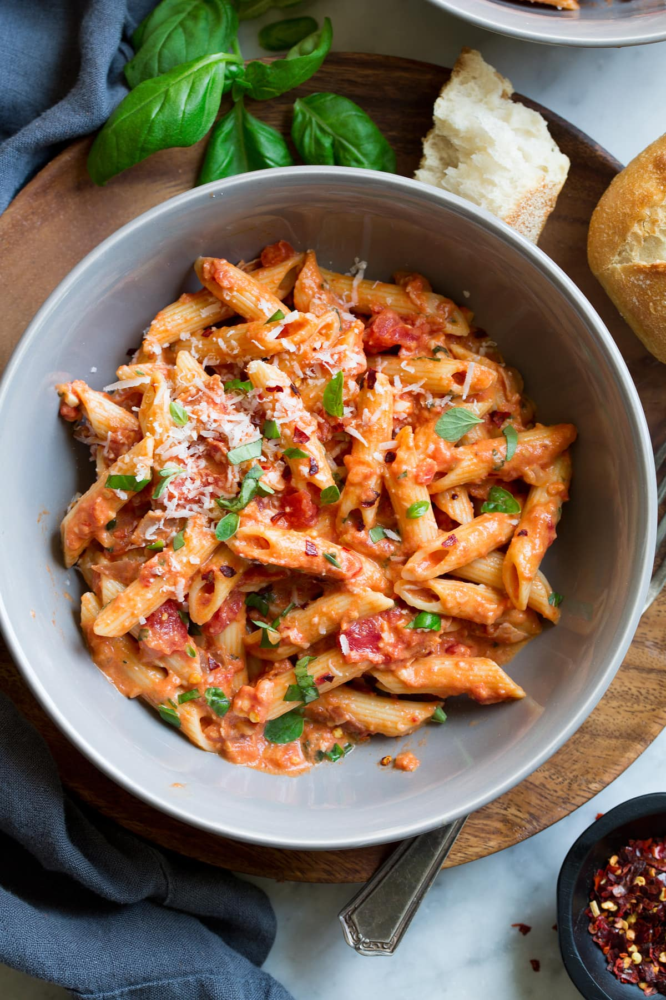

Penne Alla Vodka

Penne Alla Vodka – perfectly hearty and tender penne pasta is tossed with a creamy and vibrant, San Marzano tomato based and vodka infused sauce that’s seasoned with fresh herbs and parmesan. Talk about delicious dinner recipe!
This easy vodka sauce tastes vibrantly tomatoey, deliciously herby, lightly peppery and faintly smokey if you opt to use pancetta. And with the red pepper flakes it also has an exciting spicy little kick to it on the tip of your tongue.
Ingredients
- 1 pound penne
- 3 cloves garlic, minced
- 1 whole medium onion, chopped finely
- 3 tablespoons butter
- 2 tablespoons olive oil
- 1 cup vodka
- one 14-ounce can tomato puree
- 1 cup heavy cream
- 1 generous pinch red pepper flakes
- 1/4 teaspoon salt
- freshly ground black pepper
- grated parmesan
Steps
- Boil a pot of water
- Cook the pasta for 10-12 minutes for an aldante consistency
- Saute the garlic and onions in 2 tablespoons butter and the olive oil in a saucepan over medium heat until soft.
- Pour in the vodka, being careful if your stove has an open flame (remove the pan from the heat before adding). Cook and reduce for 2 to 3 minutes, then pour in the tomato puree.
- Stir the mixture until it's thoroughly combined, then reduce the heat to low. Pour in the heavy cream. Stir to combine, then turn heat to the lowest simmer possible. Sprinkle in the red pepper flakes and add salt and pepper to taste.
- Finally, stir in the remaining 1 tablespoon butter. Pour the drained pasta into the sauce and toss to combine. Sprinkle on the Parmesan, then sprinkle on more red pepper flakes if desired.
Return to main page